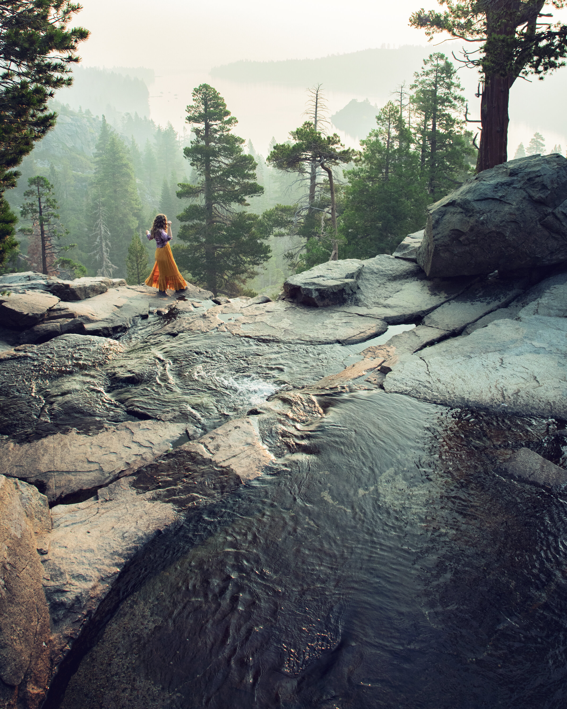
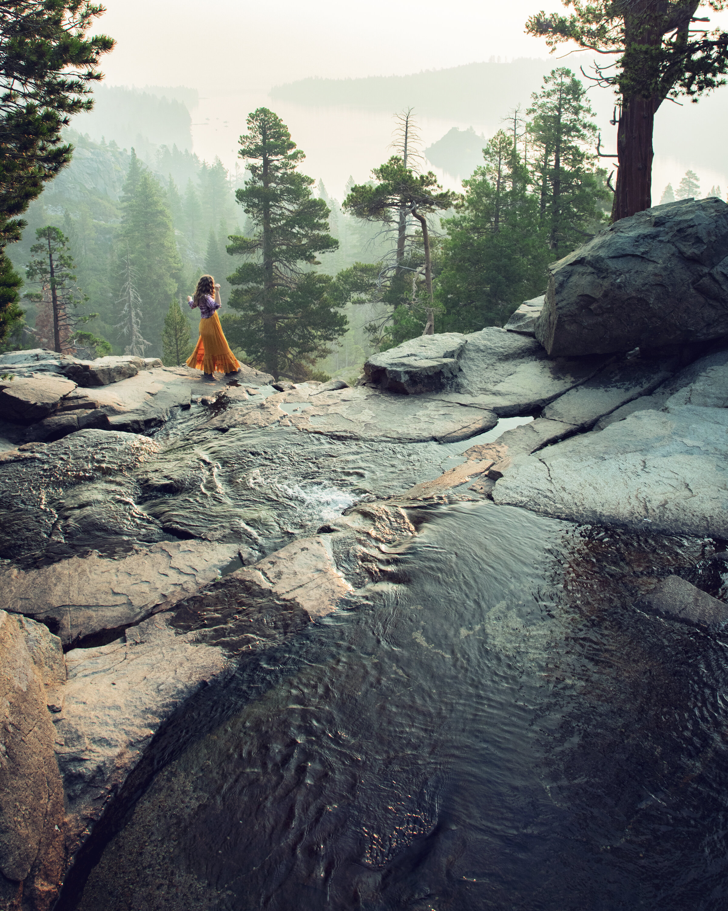

Travel
Lake Tahoe 🇺🇸


Geographical Location: California and Nevada, USA
“When it comes to things to do in South Lake Tahoe, you can shred down the mountain from 10,067 ft. at Heavenly Mountain Resort’s peak or you can dive into the depths of Lake Tahoe. It’s more than 1600 ft. deep, making it one of the deepest lakes in North America. Needless to say, there’s plenty of things to do in Lake Tahoe above and below the surface.”
“All parts of Lake Tahoe are beautiful and have something unique to offer. South Lake Tahoe is popular for its ski resorts like Heavenly, Sierra at Tahoe and Kirkwood ski resorts. South Lake Tahoe is also popular for its restaurants, shopping, casino resorts and vibrant nightlife.”
Photo Gallery:

 

Vatican City 🇻🇦

Geographical Location: Europe
"Vatican City, a city-state surrounded by Rome, Italy, is the spiritual and administrative focal point of the Roman Catholic Church. Home to architectural and artistic marvels, it carries a history rich with spirituality and exquisite artistry. Visitors can start their journey at the St. Peter's Square, which stands as a testament to masterful architecture and the deep-rooted history of the church."
"The Vatican boasts an array of stunning sites that captivate the eye and nourish the soul. From the iconic spiral staircase in the Vatican Museums to the breath-taking paintings in the Athenian academy, the heritage it harbors is indeed immense. Even a glimpse of the city from the waterfront offers a panoramic that encapsulates the spirit and grandeur of Vatican City, presenting an ethereal view that evokes a sense of tranquility and reverence."
Photo Gallery:
Budapest, Hungary ğŸ‡ğŸ‡º

Geographical Location: Europe
"Budapest is the capital city of Hungary. With a unique, youthful atmosphere, world-class classical music scene as well as a pulsating nightlife increasingly appreciated among European youth, and last but not least, an exceptionally rich offering of natural thermal baths, Budapest is one of Europe's most delightful and enjoyable cities. Due to its scenic setting and its architecture it is nicknamed 'Paris of the East.'"
"Budapest is one of the most photogenic cities in Europe. The dramatic skyline that Budapest is most famous for is peppered with 19th-century architectural wonders alongside the Danube River. Notable landmarks include the majestic riverside Parliament Building and a collection of stunning basilicas. Budapest is also home to the largest thermal water cave system and the second largest synagogue in the world. And for those who love to shop, the Central Market Hall is a must."